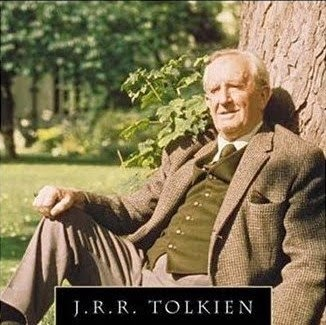

La trilogía cinematográfica de El Señor de los Anillos, basada en la novela homónima del escritor británico J. R. R. Tolkien, comprende tres películas épicas de fantasía, acción y aventuras: El Señor de los Anillos: la Comunidad del Anillo (2001), El Señor de los Anillos: las dos torres (2002) y El Señor de los Anillos: el retorno del Rey (2003). Las tres películas fueron escritas, producidas y dirigidas por Peter Jackson, coescritas por Fran Walsh y Philippa Boyens y distribuidas por New Line Cinema. Considerado como uno de los mayores proyectos cinematográficos nunca acometidos, con una recaudación global de más de 2900 millones USD, el proyecto completo duró ocho años, con la filmación simultánea de las tres películas y rodadas enteramente en la tierra natal de Jackson, Nueva Zelanda.